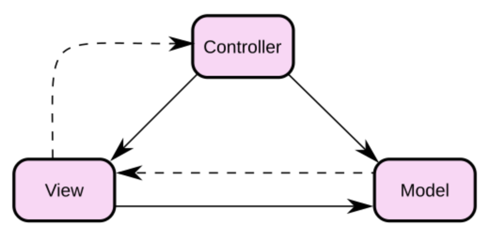
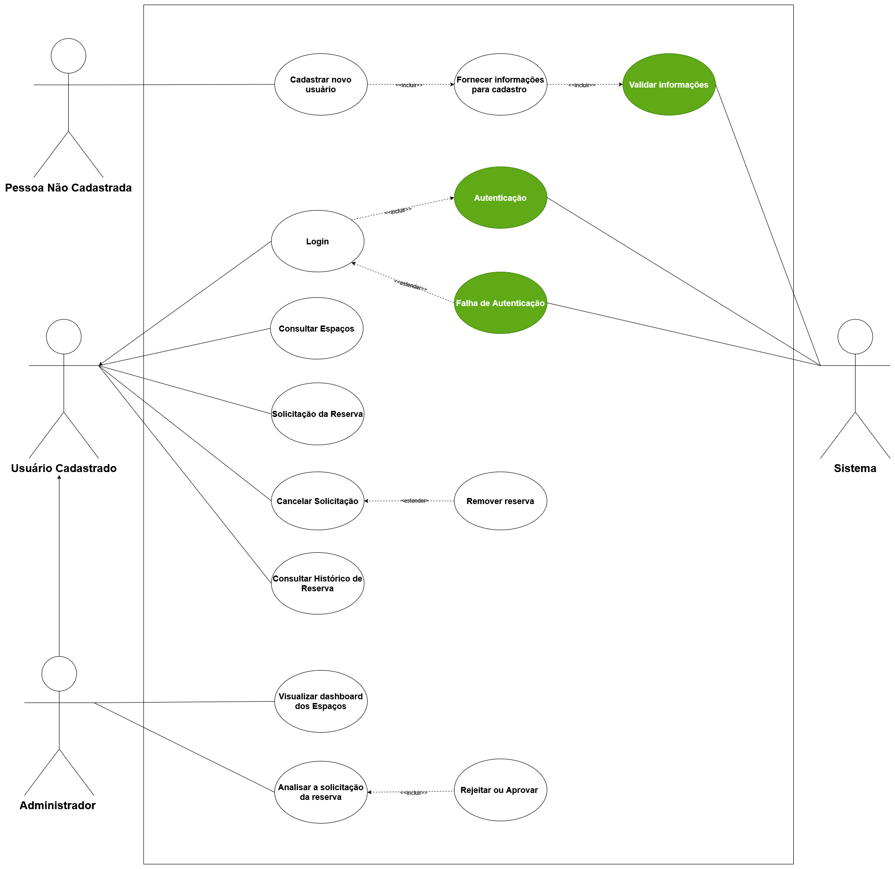
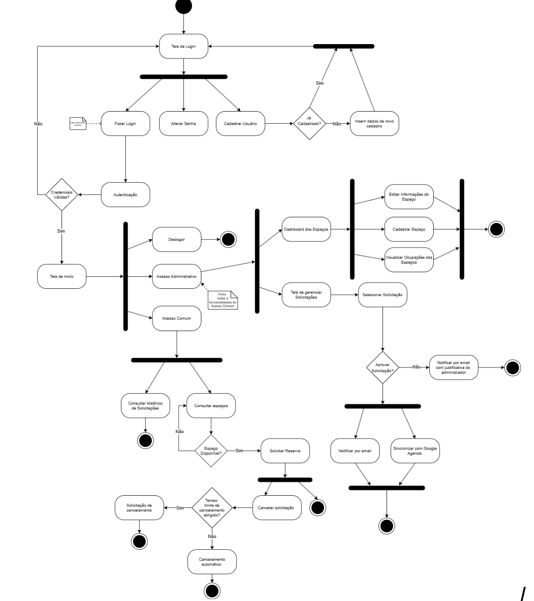
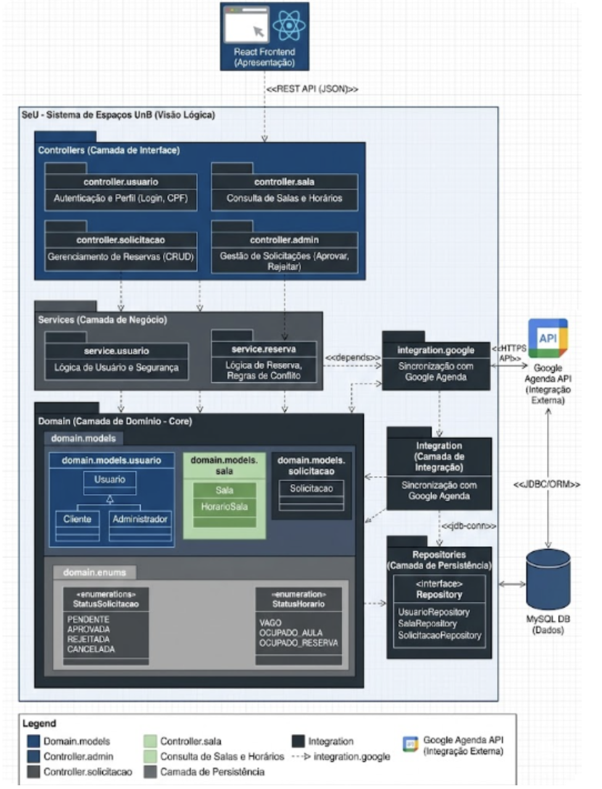
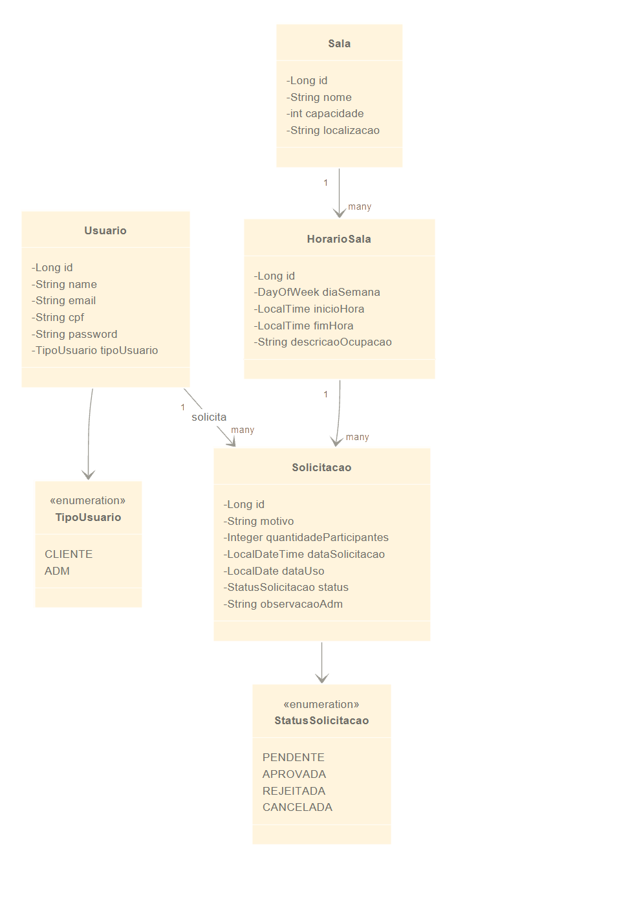
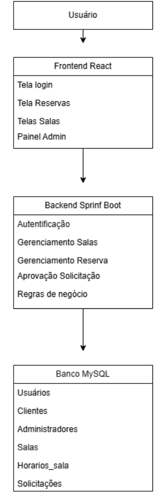
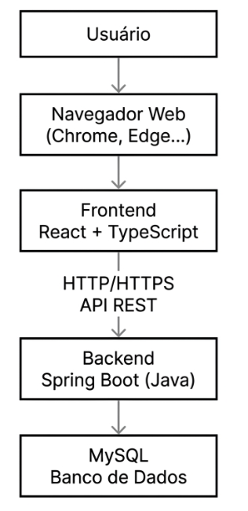

2. Representação Arquitetural
2.1 Definições
O sistema "Seu Espaço UnB" adotará o padrão arquitetural MVC (Model-View-Controller). Esta abordagem consolida-se na separação estrita das responsabilidades da aplicação em três camadas distintas, porém altamente interconectadas, promovendo a modularidade, o encapsulamento e a organização semântica do código. No contexto de aplicações web modernas, a arquitetura MVC do projeto será implementada fisicamente através de um modelo Cliente-Servidor (Frontend desacoplado do Backend). O detalhamento das camadas instanciadas para este projeto engloba:
-
Model (Modelo / Lógica da Aplicação): Representa o núcleo de dados, o estado do sistema e a lógica de negócios da aplicação. No escopo do projeto, será materializada utilizando o ecossistema Java Spring Boot em conjunto com o banco de dados MySQL para o armazenamento das informações. Esta camada é responsável por definir como os dados (como Espaços, Reservas e Perfis de Usuário) são estruturados e garante que as regras de uso dos espaços sejam respeitadas durante qualquer operação de reserva ou consulta e garantir a consistência, segurança e persistência das transações.
-
View (Visão / Camada de Apresentação): É a saída de representação gráfica e o ponto de interação direta com os usuários. Será desenvolvida utilizando a biblioteca React e a linguagem tipada TypeScript, focando na construção de uma experiência fluida e responsiva. A View tem como responsabilidade consumir os dados providos pelo Model e exibi-los de forma reativa e intuitiva, respeitando os requisitos não-funcionais de usabilidade e a identidade visual modernista brasileira estabelecida para a marca ("SeU").
-
Controller (Controlador): Atua como o intermediário e coordenação entre a interface e o núcleo de dados, entre as ações geradas na View e as operações processadas pelo Model. Na implementação do projeto, assumirá a forma de Controllers RESTful dentro do Spring Boot. Os Controladores receberão as requisições HTTP do frontend (como solicitações de reserva ou aplicação de filtros de busca), irão interpretar os parâmetros e delegar o processamento à camada Model e, por fim, retornarão respostas padronizadas (formato JSON) indicando sucesso ou erro da operação para a interface.
2.2 Justifique sua escolha
A adoção da estrutura arquitetural MVC, concretizado através da divisão técnica entre um frontend reativo e um backend RESTful, justifica-se por uma série de fatores estratégicos e técnicos diretamente alinhados aos documentos de Visão do Produto e Declaração de Escopo:
-
Familiaridade Técnica da Equipe: Um dos motivos centrais para a escolha desta arquitetura foi a experiência prévia dos integrantes do grupo com o padrão MVC. A equipe já aplicou este modelo em disciplinas anteriores e em projetos de desenvolvimento pessoal, o que reduz o tempo de adaptação e aumenta a segurança na implementação das funcionalidades.
-
Desenvolvimento Paralelo, Alta Manutenibilidade e Escalabilidade de Escopo: A divisão clara de responsabilidades permite que os subgrupos de frontend e backend trabalhem simultaneamente. O produto prevê uma evolução de complexidade, partindo de cadastros e listagens até atingir funcionalidades integradas. O isolamento promovido pelo MVC garante que a lógica de negócios (Model) possa sofrer manutenções profundas ou ampliações estruturais sem causar quebras em cascata na interface do usuário (View).
-
Reutilização de Componentes e Independência da Interface: Ao projetar o controlador para fornecer dados de forma isolada, a lógica de negócios torna-se independente da plataforma de visualização. Caso a unidade acadêmica demande, no futuro, a criação de um aplicativo nativo para Android/iOS, o backend concebido nesta arquitetura poderá ser reaproveitado.
-
Integração Eficiente com as Tecnologias: O framework Java Spring Boot foi concebido para operar nativamente com o padrão MVC. Optar pelo MVC permite que a equipe explore o potencial máximo do framework de forma fluida, utilizando os recursos internos do framework de maneira natural, facilitando a organização automática do código e a aplicação dos testes de software, reduzindo drasticamente a probabilidade de falhas de arquitetura e facilita a aplicação dos testes e garantindo a qualidade do produto final.
2.3 Detalhamento
Camada de Modelo / Lógica da aplicação (Model): Consiste na parte lógica. Ou seja, comportamento dos dados por meio das regras de negócios. Fica esperando as chamadas das funções (que permite o acesso aos dados que serão coletados, gravados e exibidos). Modela os dados e o comportamento por trás do processo de negócio.
Camada de Apresentação (View): Saída de representação dos dados, onde os dados solicitados do model são exibidos. A view deve garantir a visualização atualizada da Model. Mudanças na Model refletem na View.
Camada de Controle (Controller): Tem como foco a ação do usuário, é onde ocorre o recebimento de eventos da View, a manipulação dos dados e a chamada da Model para execução da lógica de negócio correspondente. Atua fortemente na organização do fluxo da aplicação.
Figura 1 - Esquemático da arquitetura MVC

Fonte: Wikipedia, Acesso em 2026.
Conforme a figura esquemática apresentada, o sistema é dividido em três componentes principais interconectados. Desse modo, a arquitetura MVC é categorizada pela separação de propósitos (Acesso aos dados, lógica de negócio, Lógica de Apresentação e interação com utilizador). O MVC ajuda na escalabilidade e o código com um propósito melhor definido (facilitando teste e desenvolvimento/reutilização).
2.4 Metas e restrições arquiteturais
Esta seção cumpre o papel fundamental de delimitar o campo de atuação da equipe de desenvolvimento, descrevendo detalhadamente os requisitos de alta prioridade que exercem influência direta e mandatória sobre as decisões de arquitetura do sistema. O objetivo é estabelecer um equilíbrio técnico entre as metas de qualidade, os objetivos de excelência que o software busca alcançar para satisfazer seus usuários e as restrições, as limitações técnicas, legais ou institucionais, assegurando que a arquitetura proposta seja não apenas funcional, mas também resiliente e adequada ao ambiente acadêmico da FCTE.
2.4.1 Metas Arquiteturais
As metas arquiteturais representam as prioridades de qualidade e os atributos de sistema que guiarão cada etapa da construção do software. Elas servem como bússola para a escolha de padrões de projeto e tecnologias, garantindo que o produto final não apenas cumpra suas tarefas básicas, mas as execute com um nível de excelência que atenda às expectativas da comunidade da FCTE:
-
Usabilidade e Experiência do Usuário (UX): A meta central é converter a complexidade da gestão de espaços físicos em uma interface intuitiva, a fim de evitar os problemas atuais presentes que os funcionários enfrentam. O sistema deve permitir que um usuário realize a consulta de disponibilidade em poucos passos, utilizando elementos da identidade visual modernista brasileira para criar uma interface que transmita clareza, pertencimento e eficiência estética.
-
Desempenho e Eficiência: O sistema deve garantir tempos de resposta baixos para operações de busca e filtragem de salas. A arquitetura deve ser otimizada para que o processamento no Backend e a persistência de dados no MYSQL ocorram de forma síncrona e ágil, garantindo que o usuário receba o retorno de suas buscas e filtros quase instantaneamente.
-
Segurança e Integridade dos Dados: Como o sistema lida com dados de identificação (e-mail, CPF e senhas), a arquitetura deve priorizar a proteção dessas informações. A arquitetura deve garantir que apenas usuários autenticados acessem funcionalidades de reserva e que somente perfis administrativos possam alterar a grade de horários, mantendo um registro auditável e íntegro de todas as transações de dados.
-
Manutenibilidade: Devido à natureza acadêmica do projeto, o código deve ser organizado de forma que futuros desenvolvedores possam compreender e evoluir o sistema facilmente. A separação clara proporcionada pelo padrão MVC é a meta estratégica para garantir que a lógica de dados e a interface possam ser atualizadas de forma independente.
-
Portabilidade: O sistema deve ser acessível a partir de qualquer navegador moderno (Chrome, Firefox, Safari, Edge), garantindo que alunos e professores possam consultar os espaços tanto em computadores de mesa quanto em dispositivos móveis sem perda de funcionalidade.
2.4.2 Restrições Arquiteturais
As restrições são os fatores limitantes e as condições de contorno que a equipe deve respeitar obrigatoriamente durante todo o ciclo de vida do projeto. Elas representam decisões prévias ou condições externas que moldam e restringem as opções arquiteturais disponíveis:
- Restrição Tecnológica: O desenvolvimento está estritamente vinculado ao ecossistema tecnológico previamente validado pela equipe. Isso implica na utilização mandatória de React com TypeScript para a construção de um Frontend reativo e tipado, Java com Spring Boot para um Backend robusto e escalável, e MYSQL como motor de banco de dados relacional. Essa escolha visa aproveitar a familiaridade técnica do grupo e a estabilidade comprovada dessas ferramentas no mercado.
- Conformidade com a LGPD (Lei Geral de Proteção de Dados): O sistema deve ser projetado em total conformidade com a Lei Geral de Proteção de Dados (LGPD), garantindo o tratamento ético e seguro das informações pessoais coletadas durante o cadastro.
- Padrões Visuais Institucionais: A interface não é apenas uma ferramenta funcional, mas um ponto de contato institucional. Por isso, deve respeitar os padrões de design inspirados na identidade visual da UnB e na obra modernista de Athos Bulcão. Essa restrição impõe o uso de geometrias e paletas de cores que integrem o sistema visualmente ao ecossistema físico e cultural da universidade, validando-o como uma ferramenta oficial.
- Prazo de Entrega: O projeto possui uma restrição temporal rígida vinculada ao calendário do semestre letivo. Essa limitação impõe um planejamento rigoroso de Sprints semanais, onde a priorização deve ser constantemente avaliada para garantir que o MVP (Mínimo Produto Viável) seja entregue com todas as funcionalidades críticas até o final do cronograma acadêmico.
- Infraestrutura de Rede e Conectividade do Campus: O sistema deve operar de forma eficiente considerando as condições de conectividade do campus. Portanto, as requisições entre o Cliente (Frontend) e o Servidor (Backend) devem ser projetadas para serem extremamente leves, garantindo que o sistema permaneça funcional e rápido.
2.5 Visões
2.5.1 Visão de uso
Para uma melhor visualização do sistema, apresentamos o Diagrama de Caso de Uso (figura 2), no qual os atores do sistema exemplificam as funcionalidades acessíveis a cada perfil. Nele, destacam-se o fluxo de autenticação, onde o logar e cadastrar novo usuário possuem dependências de inclusão, para autenticação e validação, os quais estão destacados em verde. Na ação do ator primário ele herda as capacidades do usuário cadastrado, complementando-as com ações de gestão, como Visualização de Dashboard e Análise de Solicitação. Enquanto a ação do ator secundário, o ator Sistema está posicionado à direita para evidenciar sua responsabilidade no processamento de validações automáticas, como o envio de notificações e a verificação de credenciais, funcionando como o motor que suporta as ações dos usuários.
Figura 2 - Diagrama de Casos de Uso

Fonte: Elaborado pelos autores (2026).
Deste forma, em virtude de uma melhor visualização da complexidade do sistema e proporcionar uma melhor interpretação do funcionamento do fluxo de execução das atividades, utilizou-se também o Diagrama de Atividades (Figura 3). Esse diagrama representa a sequência das ações realizadas pelos usuários e pelo sistema, evidenciando processos como autenticação, gerenciamento de solicitações, reserva de espaços, notificações automáticas e cancelamentos. Dessa forma, torna-se possível compreender de maneira mais clara e concisa a dinâmica operacional do sistema e a interação entre seus componentes.
Figura 3 - Diagrama de Atividades

Fonte: Elaborado pelos autores (2026).
2.5.2 Visão de organização lógica
A organização lógica do sistema Seu Espaço UnB (SeU) é estruturada para atender à necessidade de gerenciamento de espaços físicos da FCTE, separando as funcionalidades de acordo com os perfis de usuário e os objetivos de negócio identificados na visão do produto. O sistema utiliza o padrão MVC (Model-View-Controller) para organizar a interação entre a interface e o processamento de dados.
A. Decomposição Funcional (Módulos)
A lógica do sistema é organizada em quatro grandes frentes, conforme as funcionalidades elicitadas:
- Gerenciamento de Perfil: Responsável pela identificação dos usuários e pela lógica de diferenciação entre o perfil de Usuário (comum) e Administrador.
- Consulta de Espaços: Implementa a lógica de busca e visualização das salas e laboratórios, permitindo filtrar os locais por características específicas da unidade.
- Sistema de Reservas: Módulo central que processa as solicitações de uso, gerencia os status de aprovação/rejeição e garante a sincronização com o calendário.
- Integração com Google Agenda: Responsável pela comunicação externa para que as reservas aprovadas sejam refletidas automaticamente na agenda institucional. B. Camadas de Organização
A organização lógica segue a divisão de responsabilidades definida na arquitetura do projeto:
- Comunicação Frontend-Backend: Realizada através de APIs RESTful. A camada de Visão (React) envia requisições via protocolo HTTP/HTTPS e recebe respostas em formato JSON.
- Interface Controladora (Controller): Atua como o ponto de entrada das requisições, delegando o processamento à camada de Modelo e retornando o status da operação (sucesso ou erro) para o usuário.
- Interface de Persistência: A camada de Modelo comunica-se com o banco de dados MySQL para garantir a consistência das transações de reserva e o armazenamento seguro dos perfis. C. Fluxo Lógico de Dados
A lógica de operação segue um fluxo unidirecional para garantir a manutenção:
- A interface solicita uma ação (ex: reserva de sala).
- O componente de controle valida se o usuário possui o perfil adequado (Usuário ou Admin).
- O modelo processa a solicitação e atualiza o banco de dados.
- O status é retornado à interface e, em caso de sucesso, replicado para o Google Agenda.
Figura 4 - Diagrama de Pacote

Fonte: Elaborado pelos autores (2026).
2.5.3 Visão estrutural
A visão estrutural do sistema Seu Espaço UnB (SeU) apresenta os principais elementos que compõem a aplicação, como eles se conectam e suas responsabilidades dentro do processo de gerenciamento de reservas de espaços acadêmicos da FCTE.
O sistema é composto pelos elementos principais:
- Usuário;
- Sala;
- Horário da Sala;
- Solicitação de Reserva.
Os usuários do sistema são representados por uma única entidade, Usuario, diferenciada por um atributo de perfil (TipoUsuario, com os valores CLIENTE e ADM) em vez de subclasses distintas. Essa decisão simplifica a persistência dos dados e a lógica de autenticação, já que o Spring Security atribui os papéis de acesso (ROLE_CLIENTE, ROLE_ADM) diretamente a partir desse atributo, sem necessidade de herança entre classes. O perfil Cliente é responsável por consultar salas, verificar disponibilidade e realizar solicitações de reserva. O perfil Administrador possui permissões para analisar, aprovar ou rejeitar solicitações e gerenciar a ocupação dos espaços.
A entidade Sala representa os espaços físicos disponíveis para uso acadêmico, enquanto HorarioSala define a grade de horários de cada ambiente: cada registro corresponde a um dia da semana fixo, com hora de início e fim. A ocupação por aulas regulares é indicada pelo campo descricaoOcupacao, enquanto a disponibilidade para reservas pontuais é controlada pela relação com a entidade Solicitacao. A entidade Solicitacao registra as reservas realizadas pelos usuários, armazenando motivo, quantidade de participantes, data de uso, status e, quando aplicável, a observação do administrador responsável pela análise.
Os elementos do sistema se conectam por meio de relacionamentos que representam o fluxo de funcionamento da aplicação:
- um usuário pode realizar várias solicitações;
- cada solicitação pertence a um horário específico (HorarioSala);
- uma sala pode possuir vários horários cadastrados;
- ao aprovar uma solicitação, o sistema rejeita automaticamente as demais solicitações pendentes que concorriam pelo mesmo horário e data.
Figura 5 - Diagrama de Classes

Fonte: Elaborado pelos autores (2026).
O sistema foi estruturado em arquitetura de três camadas, composta por frontend, backend e banco de dados.
Figura 6 - Diagrama de Componentes

Fonte: Elaborado pelos autores (2026).
A estrutura do sistema foi organizada de forma modular, separando interface, regras de negócio e persistência de dados. Essa divisão permite maior facilidade de manutenção, escalabilidade e reutilização dos componentes da aplicação.
A utilização de uma arquitetura em camadas, juntamente com a modelagem orientada a objetos apresentada no diagrama de classes, contribui para um sistema mais organizado, seguro e alinhado aos requisitos funcionais definidos para o projeto Seu Espaço UnB (SeU).
2.6 Visão de Implantação
O sistema Seu Espaço UnB será implantado em uma arquitetura cliente-servidor, permitindo o acesso dos usuários por meio de navegadores web modernos em computadores e dispositivos móveis.
A camada de apresentação será desenvolvida utilizando React com TypeScript, sendo executada no navegador do usuário. Essa camada será responsável pela interface gráfica, interação com o usuário e envio das requisições para o backend.
A camada de negócio será implementada utilizando Java com Spring Boot, funcionando como servidor da aplicação e responsável pelo processamento das regras de negócio, autenticação, gerenciamento de reservas e comunicação com o banco de dados.
O banco de dados utilizado será o MySQL, responsável pelo armazenamento persistente das informações do sistema, como usuários, espaços físicos, reservas e históricos.
A comunicação entre frontend e backend ocorre por meio de APIs REST utilizando protocolo HTTP/HTTPS e troca de dados no formato JSON.
A arquitetura foi escolhida por proporcionar:
- Separação de responsabilidades;
- Facilidade de manutenção;
- Escalabilidade;
- Melhor organização do desenvolvimento;
- Possibilidade de acesso remoto pela comunidade acadêmica. Figura 7 - Diagrama de Implantação da Aplicação

Fonte: Elaborado pelos autores (2026).
2.7 Restrições adicionais
O sistema Seu Espaço UnB (SeU) é uma aplicação web acessível diretamente pela internet, exigindo autenticação prévia por meio de e-mail institucional, CPF e senha.
O sistema deve suportar múltiplos usuários logados simultaneamente, considerando que a FCTE conta com 3.016 alunos regulares de graduação (dados do 2º semestre de 2024), além dos docentes e funcionários técnicos-administrativos que terão perfil de Administrador no sistema, conforme o Anuário da UnB 2025 (Tabela 2.16).
No que diz respeito às características de qualidade de software, destacam-se:
- Usabilidade: a interface deve ser intuitiva e de fácil navegação, permitindo que usuários sem conhecimento técnico realizem reservas e consultas sem dificuldades;
- Eficiência: o sistema deve apresentar tempo de resposta inferior a 2 segundos para as principais operações, como listagem e filtragem de espaços;
- Confiabilidade: a aplicação deve garantir estabilidade nas funcionalidades entregues, assegurada pela Definition of Done da equipe, que exige testes aprovados e revisão de código antes de qualquer integração à branch principal;
- Portabilidade: por ser uma aplicação web, o sistema deve funcionar nos principais navegadores modernos sem necessidade de instalação;
- Segurança: o sistema garante a criptografia de dados sensíveis e a proteção contra acessos não autorizados. A autenticação é gerenciada pelo Spring Security de forma stateless via tokens JWT, com os perfis de acesso centralizados em uma entidade única
Usuarioatravés de um enumerador (TipoUsuario), assegurando um controle de permissões leve e eficiente.
A diferenciação de permissões ocorre com base no papel atribuído ao usuário:
- O perfil Cliente possui acesso às operações de consulta e solicitação, podendo consultar salas, visualizar horários disponíveis, solicitar reservas e cancelar solicitações;
- O perfil Administrador possui permissões de gestão, sendo responsável por consultar solicitações pendentes, aprovar reservas e rejeitar solicitações com observações, além de ser o único perfil capaz de alterar o estado de uma solicitação.